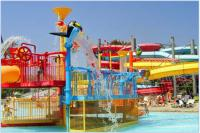
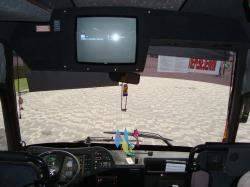

О Нас
Наша компания предлагает услуги пассажирских перевозок по приемлемой цене. Все автобусные перевозки осуществляются профессиональными водителями, имеющими большой опыт работы на любых расстояниях и в различных условиях. Мы знаем, как вам важен комфорт и удобство, а также заботимся о вашем бюджете – вы всегда может рассчитывать на подбор подходящего тарифа.
Мы осуществляем все виды перевозок:
-поездки на море
-экскурсионные поездки
-школьные экскурсии (полный пакет документов для перевозки детей).
-корпоративное обслуживание
-трансферы на вокзалы и в аэропорт.
-паломнические туры;
-обслуживание свадеб, юбилеев
Каждый пассажир застрахован на время поездки.
Обращайтесь! И мы с удовольствием решим любую вашу задачу.
г.Днепропетровск, пр.Калинина 62 офис 314
056-798-04-95
097-036-73-53
063-798-04-95
Кирилловка
Это удивительное место на курортной карте мира, которое год от года привлекает все больше и
больше отдыхающих.
Стоимость проезда от 180 грн.
Выезд ежедневно.
Сбор по районам города - доставка к базам отдыха
Содействие в расселении. Доступные цены.
Поселок Кирилловка находится на самом берегу Азовского моря, а две из его улиц являются одновременно песчаными косами между Азовским морем и Утлюкским и Молочным лиманами – улица Коса Федотова и улица Коса Пересыпь, а это значит, что море здесь не просто близко, а очень близко!
В Кирилловке нет ни одного промышленного предприятия, ни порта, ни железной дороги. Поэтому закономерно, что этот регион является экологически чистым. Кирилловка в межсезонье предлагает прекрасные возможности для пляжного отдыха в мае и в бархатный сезон. А какая здесь рыбалка и охота!

В Кирилловке также есть Луна-парки, несколько ночных клубов и развлекательных центров, два зоопарка, множество кафе. На пляжах много водных горок и аттракционов. Кроме купаний и загораний Вы можете заняться любимым хобби, освоить новый вид спорта или творчества, отправиться на экскурсии или отведать морской кухни.
Кирилловка отличается теплым климатом, малым количеством осадков в летнее время, целебным сочетанием морского и степного воздуха. Удаленность от города, от перегруженных автотрасс придает особенный шарм отдыху на Азове.
Геническ
Стоимость проезда от 190 грн.Выезд ежедневно.
Сбор по районам города - доставка к базам отдыха
Содействие в расселении. Доступные цены.
Это уютный курортный городок на берегу Азовского моря в Украине. Здесь Вы можете вспомнить о летнем отпуске и найти себе подходящее место для отдыха, узнать больше о самом мелком (и теплом) Азовском море в мире.
Генгорка
Стоимость проезда составляет от 200 грнСама по себе Генгорка начинается в 10 километрах от северной оконечности Арабатской стрелки и представляет собой курортный поселок вытянувшийся вдоль побережья Азовского моря. Генгорка своими пансионатами повернута лицом к морю а фасадом к Сивашу.
Счастливцево
Стоимость проезда составляет от 210 грн
Счастливцево по праву можно назвать "Золотой срединой" Арабатской стрелки. Примерно с этого места Азовское море проявляется во всей своей красе. От Геническа поселок находится в 18км.
 На территории расположены только четыре крупных пансионата, остальные за его пределами,на 7 км. в сторону Стрелкового. Зато частный сектор предлагает очень широкий выбор условий проживания. Частные минигостиницы, пансионаты и дворы с различными постройками приспособленными под сдачу отдыхающим позволяют выбрать жилье любой ценовой категории.
На территории расположены только четыре крупных пансионата, остальные за его пределами,на 7 км. в сторону Стрелкового. Зато частный сектор предлагает очень широкий выбор условий проживания. Частные минигостиницы, пансионаты и дворы с различными постройками приспособленными под сдачу отдыхающим позволяют выбрать жилье любой ценовой категории.
Стрелковое
Стоимость проезда составляет от 250 грнНа Арабатской стрелке это самый большой посёлок, протяжённостью в несколько километров. Много баз отдыха, как частных так и ведомственных. Из минусов можно отметить, что до ближайшего заведения или пляжа приходится немного пройтись.
Бердянск
Стоимость проезда от 180 грн.Выезд ежедневно.
Сбор по районам города - доставка к базам отдыха
Самое большое преимущество Бердянска пляжного состоит в полной свободе выбора места и способа отдыха. Приехав отдохнуть на неделю, загорать можно каждый раз на новом месте, получая совершенно разные впечатления от пейзажей, обустройства пляжей и воды. Весь приморский берег на пляжах в Бердянске – это мелкий песок и перемолотый ракушняк. Бердянск – город с отличной инфраструктурой. Здесь имеются больницы, банки, аптеки, супермаркеты и даже дорогие бутики. В некоторых торговых центрах Бердянска есть детские площадки. Во многих кафе и ресторанчиках города в наличии Wi-Fi зоны.
Железный порт
Железный порт – прелестное местечко на берегу Черного моря.
Благоприятный воздух курорта в сочетание с чистым песчаным пляжем и сосновым бором способствует оздоровлению организма. Расположен Железный порт в Херсонской области, Украины. С запада он граничит с Черноморским биосферным заповедником,
так что порой трудно найти грань между дикой природой и современными пансионатами.
Стоимость проезда от 250 грн.
Выезд ежедневно.
Сбор по районам города - доставка к базам отдыха
Железный Порт представляет собой курортную зону,
с развитой инфраструктурой пансионатов, кафешек, баров, дискотек и различных аттракционов. Отлично подходит для отдыха с малышами,
и родители, и детишки прекрасно проведут время на берегу Черного моря.
Лазурное
Лазурное – это маленький, очень уютный курортный поселок на Черноморском побережье.
Стоимость проезда от 250 грн.
Выезд ежедневно.
Сбор по районам города - доставка к базам отдыха
Это недорогой семейный и молодежный курорт. Благодаря неглубокому морю и чистому песчаному дну, особому южному микроклимату и огромному количеству солнечных дней, курорт Лазурное удобен и для детского отдыха.
Летний сезон здесь длится с июня по сентябрь.
Среди преимуществ отдыха в Лазурном можно назвать: широкие, чистые, оборудованные песчаные пляжи, теплое море с пологим дном, обилие сезонных овощей и фруктов, наличие рынка,
магазинов, точек общепита – от кафе-столовых до ночных клубов, возможность экскурсий к интересным объектам – природным и рукотворным .
Чонгар
Стоимость проезда от 250 грн.Дату выезда уточнять по телефону.
Сбор по районам города.
Высокий автобус MAN на 35мест с панорамным лобовым стеклом и высокой посадкой пассажиров, что облегчает проведение экскурсий в городских условиях. Прекрасно подойдет при заказе автобуса на дальние поездки. Уютный салон с ковровым покрытием в межрядном проходе, и мягкими регулируемыми креслами. Две двери для посадки-высадки пассажиров спереди и посередине салона, большие багажные отсеки.
Мерседес спринтер 18 мест.